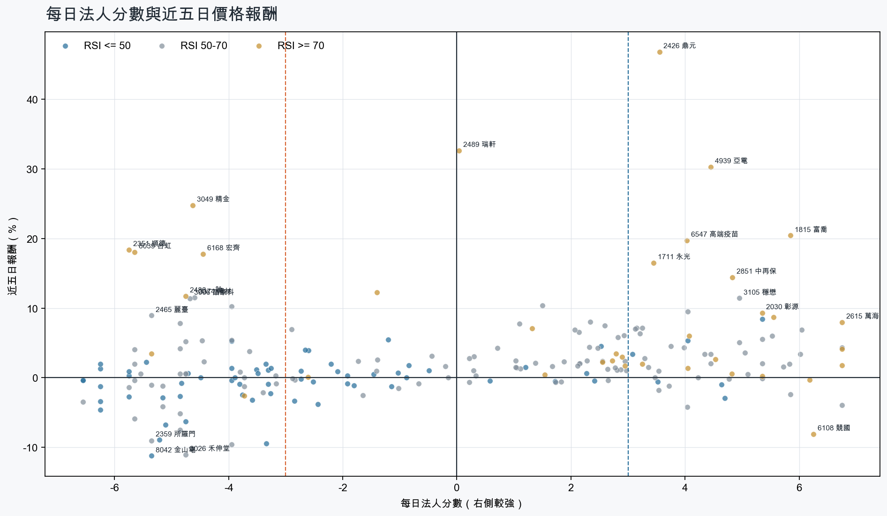
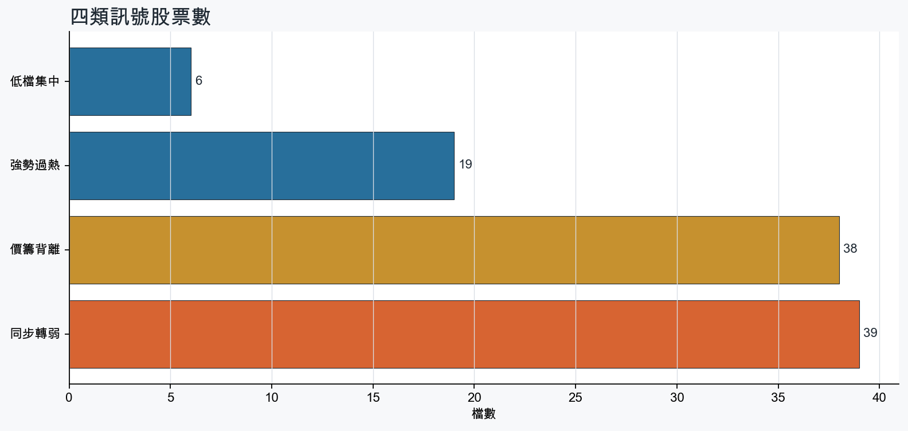
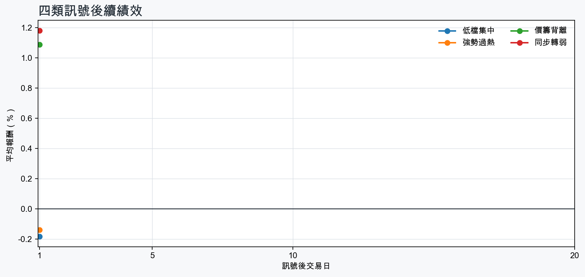

市場情緒偏多
近5日法人合計+149,631 張
篩選池上漲比例66.4%
籌碼好 / RSI低6 檔
籌碼差 / 價跌10 檔



01
籌碼好 / RSI低
優先研究基本面；法人續買且價格止穩時，才適合分批觀察。
| 股票 / 建議 | 每日法人分 | RSI / 價格 | 每週集保確認 | 基本面 | 近期消息 |
|---|---|---|---|---|---|
| 3260 威剛優先觀察 | +4.0法人 +3,764 張 / 2 天 | 47.85日 +5.3% | +2.32 pp1000張 +3.00 pp | 單月營收年增 +331.3%；累計營收年增 +206.7%；上半年 EPS 62.46仍需觀察下一期財報延續性 | 威剛科技旗下電競品牌XPG跨足遊戲IP版圖攜手4Divinity結成策略聯盟德國Gamescom首度亮相啟動遊戲IP實體化與全球市場合作 - XFastest News日電貿、威剛 四檔聚焦 - 經濟日報 |
| 2618 長榮航優先觀察 | +3.1法人 +27,395 張 / 4 天 | 48.95日 +3.4% | +1.65 pp1000張 +1.55 pp | 單月營收年增 +21.4%；累計營收年增 +17.1%；上半年 EPS 2.24仍需觀察下一期財報延續性 | 長榮航揪伴 推「綠運輸計畫」 - 經濟日報長榮航簽約貨代業者AIT 推動綠運輸計畫 - news.cnyes.com |
| 5534 長虹優先觀察 | +4.7法人 +2,639 張 / 4 天 | 46.55日 -2.9% | +0.01 pp1000張 -0.51 pp | 單月營收年增 +269.8%；累計營收年增 +63.4%；上半年 EPS 1.05仍需觀察下一期財報延續性 | 營建股可以買？華固、興富發、長虹…營建指數盤整待變「搭928檔期」，這5檔體質優展望佳首選 - Yahoo新聞 |
| 2886 兆豐金優先觀察 | +4.6法人 +70,070 張 / 5 天 | 32.25日 -1.0% | +0.00 pp1000張 -0.01 pp | 單月營收年增 +4.1%；累計營收年增 +16.7%仍需觀察下一期財報延續性 | 兆豐金股價上漲該獲利了結，還是繼續存？他億元身價揭「這檔比較可口」 | 個人理財 | 理財 - 經濟日報2886 兆豐金 - 【兆豐金(2886)盤後解析】外資強力買超，主力逢高調節 ... - 股市爆料同學會 - CMoney |
| 2892 第一金優先觀察 | +3.5法人 +56,579 張 / 5 天 | 30.65日 -0.6% | +0.19 pp1000張 +0.21 pp | 單月營收年增 +2.4%；累計營收年增 +18.6%仍需觀察下一期財報延續性 | 勇奪第一金！ 台灣橫掃2026 FAI無人機足球賽- 綜合 - 華視新聞網 |
| 4989 榮科先等基本面止穩 | +5.3法人 +2,404 張 / 4 天 | 48.15日 +8.4% | -4.61 pp1000張 -2.46 pp | 單月營收年增 +105.4%；累計營收年增 +68.9%上半年 EPS -0.67；上半年營益率 -5.1% | 【10:40 即時新聞】榮科(4989)攻上漲停66.9元，短線資金迴流搭配近期營收年成長逾倍＋法人籌碼由賣轉買帶動跌深反彈 - CMoney投資網誌 |
02
籌碼好 / RSI高
趨勢強但不追價，等待量縮、RSI降溫或回測支撐。
| 股票 / 建議 | 每日法人分 | RSI / 價格 | 每週集保確認 | 基本面 | 近期消息 |
|---|---|---|---|---|---|
| 2615 萬海等拉回，不追價 | +6.8法人 +52,576 張 / 5 天 | 78.25日 +8.0% | +2.98 pp1000張 +3.15 pp | 單月營收年增 +50.1%；累計營收年增 +12.8%；上半年 EPS 6.84仍需觀察下一期財報延續性 | 貨主提早拉貨 長榮、萬海看旺Q2、Q3 - 自由時報長榮、陽明、萬海全數出清！陳嘉偉示警C波下殺 直言台股「量縮反彈」並非真多頭 - Yahoo股市 |
| 1815 富喬等拉回，不追價 | +5.8法人 +73,478 張 / 4 天 | 84.45日 +20.4% | +8.82 pp1000張 +7.89 pp | 單月營收年增 +68.1%；累計營收年增 +46.9%；上半年 EPS 2.24仍需觀察下一期財報延續性 | AI狂潮燒進玻纖布！富喬飆9%衝119元、南亞「一鍵漲停」 台玻、建榮也跟著噴 - Yahoo股市AI伺服器點燃玻纖布升級戰 富喬領漲、建榮台玻接棒？五檔玻纖布股2027新賽局浮現 - 理財周刊 |
| 2542 興富發等拉回，不追價 | +6.2法人 +18,482 張 / 5 天 | 78.35日 -0.3% | +1.93 pp1000張 +2.14 pp | 單月營收年增 +196.6%；累計營收年增 +404.3%；上半年 EPS 2.45仍需觀察下一期財報延續性 | 幼兒園、旅館變建商獵地熱門標的！10年交易榜曝光 興富發代表案近118億居冠 - Yahoo股市營建股可以買？華固、興富發、長虹…營建指數盤整待變「搭928檔期」，這5檔體質優展望佳首選 - Yahoo新聞 |
| 6108 競國等拉回，不追價 | +6.2法人 +3,378 張 / 5 天 | 70.45日 -8.1% | +3.41 pp1000張 +4.11 pp | 單月營收年增 +63.2%；累計營收年增 +28.7%；上半年 EPS 0.32上半年營益率 -8.0% | 【競國法說會重點內容備忘錄】未來展望趨勢 20260825 - 富果直送競國處分資產、訂單全數轉至大陸廠生產 上半年記憶體模組板占比43.1% - UDN |
| 2030 彰源等拉回，不追價 | +5.3法人 +3,332 張 / 4 天 | 83.65日 +9.3% | +4.10 pp1000張 +2.37 pp | 單月營收年增 +41.2%；累計營收年增 +15.7%；上半年 EPS 1.66仍需觀察下一期財報延續性 | 未抓到近期標題 |
| 3037 欣興等拉回，不追價 | +4.5法人 +10,592 張 / 5 天 | 74.45日 +2.7% | +2.68 pp1000張 +2.27 pp | 單月營收年增 +43.7%；累計營收年增 +30.8%；上半年 EPS 11.70仍需觀察下一期財報延續性 | 三大法人買賣超 – 外資買超(3037)欣興、(2881)富邦金，投信買超(1303)南亞、(2059)川湖，法人合計賣超53.36億元 - sinotrade.com.tw3037 欣興- ABF載板缺貨到2028 欣興、景碩營收持續噴出- 股市爆料同學會 - CMoney |
| 5607 遠雄港等拉回，不追價 | +4.8法人 +2,656 張 / 5 天 | 74.25日 +0.6% | +1.01 pp1000張 +1.65 pp | 單月營收年增 +38.0%；累計營收年增 +36.7%；上半年 EPS 2.18仍需觀察下一期財報延續性 | AI伺服器暢旺，遠雄港倉儲與物流需求均強- 新聞 - MoneyDJ〈熱門股〉富喬上半年EPS達2.24元 外資單周買超45607張漲幅22% - news.cnyes.com |
| 6214 精誠等拉回，不追價 | +4.0法人 +3,901 張 / 2 天 | 89.05日 +1.4% | +5.85 pp1000張 +8.12 pp | 單月營收年增 +31.8%；累計營收年增 +36.2%；上半年 EPS 6.15上半年營益率 4.3% | 精誠、日本伊藤忠成立合資公司- 日報 - 工商時報精誠攜伊藤忠CTC成立合資公司！插旗福岡搶半導體赴日IT商機 - 壹蘋新聞網 |
| 3045 台灣大等拉回，不追價 | +6.8法人 +44,932 張 / 5 天 | 70.85日 +1.8% | -0.16 pp1000張 -0.38 pp | 單月營收年增 +7.1%；累計營收年增 +4.2%；上半年 EPS 2.86仍需觀察下一期財報延續性 | 台灣大資訊長揭「逆分工」革命：導入AI不只是換工具，更要重塑流程與組織 - 天下雜誌台灣大硬科技日9月8日登場 攜策略夥伴秀Agentic AI落地實力 - news.cnyes.com |
| 2426 鼎元等拉回，不追價 | +3.5法人 +3,169 張 / 2 天 | 80.55日 +46.8% | +4.75 pp1000張 +4.05 pp | 單月營收年增 +36.3%；累計營收年增 +2.3%；上半年 EPS 0.28上半年營益率 5.8% | 8／26台股雷達｜大立光強鎖漲停登天價台半、鼎元買氣爆棚原因曝- 證券 - 工商時報【即時新聞】鼎元(2426)爆量5萬張飆漲停！這「5檔概念股」買盤進駐接棒上攻？ - CMoney投資網誌 |
03
籌碼差 / 股價上漲
可能是事件行情或軋空；沒有籌碼改善前避免追高。
| 股票 / 建議 | 每日法人分 | RSI / 價格 | 每週集保確認 | 基本面 | 近期消息 |
|---|---|---|---|---|---|
| 3049 精金背離警戒，避免追高 | -4.6法人 -6,567 張 / 1 天 | 77.85日 +24.8% | +0.22 pp1000張 +0.22 pp | 上半年 EPS 0.51單月營收年增 -70.8%；累計營收年增 -51.6%；上半年營益率 7.3% | 未抓到近期標題 |
| 8039 台虹背離警戒，避免追高 | -5.7法人 -3,976 張 / 1 天 | 73.55日 +18.0% | -0.32 pp1000張 -0.01 pp | 累計營收年增 +1.1%；上半年 EPS 1.56單月營收年增 -6.1%；上半年營益率 6.2% | PCB先跑到2027？台虹、聯茂…7檔集體漲停它連2燈飆天價「黑科技材料」成新戰場- 上市櫃 - 旺得富理財網台虹做什麼的？漲停鎖死1.5萬張搶買，原來和輝達也有關！亞電連2天亮燈又是為什麼，看懂PTFE題材有多猛 - 今周刊 |
| 2351 順德背離警戒，避免追高 | -5.8法人 -4,348 張 / 0 天 | 86.35日 +18.4% | +0.80 pp1000張 +0.82 pp | 單月營收年增 +54.0%；累計營收年增 +28.5%；上半年 EPS 2.82仍需觀察下一期財報延續性 | AI需求扛大旗，順德拚一路旺到明年- 新聞 - MoneyDJ【0826法人焦點】市場最新個股動態：弘塑 (3131 TT)、順德 (2351 TT)、中租-KY (5871 TT)、邦特 (4107 TT) - sinotrade.com.tw |
| 6168 宏齊背離警戒，避免追高 | -4.5法人 -2,137 張 / 2 天 | 74.15日 +17.8% | +0.14 pp1000張 -0.05 pp | 單月營收年增 +12.8%；累計營收年增 +7.8%；上半年 EPS 0.17上半年營益率 -0.4% | 未抓到近期標題 |
| 3374 精材背離警戒，避免追高 | -4.6法人 -2,610 張 / 2 天 | 55.95日 +11.5% | -7.47 pp1000張 -8.22 pp | 單月營收年增 +31.0%；累計營收年增 +32.6%；上半年 EPS 2.88仍需觀察下一期財報延續性 | 封測紅通通！「這檔」亮燈漲停帶聯鈞、精材、訊芯炸破9% 南茂、博磊、捷敏勁揚5% - Yahoo股市【11:57 即時新聞】精材(3374)股價上漲逾7%至334.5元，受測試產能滿載與8吋新專案量產題材帶動＋多頭均線結構與法人買盤支撐續強 - CMoney投資網誌 |
| 2481 強茂背離警戒，避免追高 | -4.0法人 -5,742 張 / 2 天 | 58.85日 +10.3% | -7.01 pp1000張 -6.39 pp | 單月營收年增 +31.0%；累計營收年增 +16.5%；上半年 EPS 2.03仍需觀察下一期財報延續性 | 功率半導體回神 台半、強茂奔漲停 - 理財周刊【11:22 即時新聞】強茂(2481)股價勁揚逾9%，AI功率半導體漲價預期帶動買盤迴流＋前期主力調節後技術面嘗試築底 - CMoney投資網誌 |
| 2486 一詮背離警戒，避免追高 | -4.8法人 -3,025 張 / 2 天 | 73.15日 +11.7% | +0.20 pp1000張 -0.58 pp | 單月營收年增 +42.5%；累計營收年增 +27.5%；上半年 EPS 0.91仍需觀察下一期財報延續性 | 一詮、先進光等8檔8/27起打入處置 聯亞等46檔列注意股 - 自由財經輝達財報押寶！台積電領軍台股狂飆 663 點站上 45,832 點！KD50黃金交叉啟動，投本比鎖碼華星光、一詮、富喬 - sinotrade.com.tw |
| 6290 良維背離警戒，避免追高 | -4.8法人 -4,243 張 / 1 天 | 63.55日 +7.8% | -1.86 pp1000張 -2.83 pp | 單月營收年增 +14.4%；累計營收年增 +8.1%；上半年 EPS 4.50仍需觀察下一期財報延續性 | 【09:47 即時新聞】良維(6290)攻上漲停232.5元，營收穩健成長帶動買盤迴流＋短線技術面反彈引爆軋空力道 - CMoney投資網誌 |
| 8033 雷虎背離警戒，避免追高 | -5.7法人 -2,218 張 / 1 天 | 51.05日 +4.1% | -7.21 pp1000張 -6.91 pp | 累計營收年增 +7.4%；上半年 EPS 0.62單月營收年增 -9.5%；上半年營益率 -0.3% | 雷虎董座：無人機結合半導體 台灣迎新契機 - 台灣大紀元無人載具預算朝野協商雷虎科技：政院版提供長期穩定需求- 政治 - 自由時報 |
| 2465 麗臺背離警戒，避免追高 | -5.3法人 -2,449 張 / 1 天 | 56.25日 +9.0% | +3.13 pp1000張 -0.16 pp | 單月營收年增 +280.9%；累計營收年增 +176.7%；上半年 EPS 2.79上半年營益率 6.5% | 未抓到近期標題 |
04
籌碼差 / 股價下跌
籌碼與價格同弱，原則上迴避，等待法人與大戶同時回補。
| 股票 / 建議 | 每日法人分 | RSI / 價格 | 每週集保確認 | 基本面 | 近期消息 |
|---|---|---|---|---|---|
| 3026 禾伸堂迴避，等待籌碼翻正 | -4.8法人 -1,814 張 / 2 天 | 52.25日 -11.0% | -2.26 pp1000張 -3.93 pp | 單月營收年增 +37.0%；累計營收年增 +18.6%；上半年 EPS 6.73仍需觀察下一期財報延續性 | 禾伸堂處置出關奔漲停 被動元件5檔齊亮燈 - ETtoday財經雲AI伺服器電源持續升級，禾伸堂今年營運向上- 新聞 - MoneyDJ |
| 8042 金山電迴避，等待籌碼翻正 | -5.3法人 -2,880 張 / 1 天 | 37.45日 -11.2% | -2.55 pp1000張 -0.31 pp | 單月營收年增 +40.3%；累計營收年增 +36.0%；上半年 EPS 2.84上半年營益率 7.7% | 8042 金山電- 人生：情緒價值規律目的🎯 - 股市爆料同學會 - CMoney |
| 2492 華新科迴避，等待籌碼翻正 | -4.0法人 -18,824 張 / 2 天 | 53.55日 -9.6% | -8.49 pp1000張 -7.87 pp | 單月營收年增 +42.0%；累計營收年增 +18.7%；上半年 EPS 4.93仍需觀察下一期財報延續性 | 一座AI機櫃狂吃100萬顆被動元件！國巨、華新科訂單升溫 跌深反攻有戲？ - 經濟日報國巨、華新科、天二科技...被動元件7月血洗後，誰能從「跌深」走向「價值重估」-理財彥究院-台股 - 商周財富網 |
| 2327 國巨*迴避，等待籌碼翻正 | -5.1法人 -17,285 張 / 0 天 | 44.65日 -6.8% | -3.58 pp1000張 -3.76 pp | 單月營收年增 +51.5%；累計營收年增 +32.5%；上半年 EPS 8.48仍需觀察下一期財報延續性 | 2327 國巨* - 國巨上週漲停那天沒賣真的會哭暈在廁所🥲 - 股市爆料同學會 - CMoney國巨*一路瀉不停！兇手抓到了 58萬股東心寒 - 自由財經 |
| 2332 友訊迴避，等待籌碼翻正 | -6.2法人 -9,187 張 / 0 天 | 29.55日 -3.4% | -4.05 pp1000張 -4.12 pp | 單月營收年增 +4.7%；累計營收年增 +9.1%上半年 EPS -0.07；上半年營益率 1.4% | 未抓到近期標題 |
| 6182 合晶迴避，等待籌碼翻正 | -5.8法人 -31,822 張 / 0 天 | 49.35日 -2.7% | -10.53 pp1000張 -9.32 pp | 單月營收年增 +18.9%；累計營收年增 +10.5%；上半年 EPS 0.06上半年營益率 2.3% | 6182 合晶 - 現在的壓力就是現在就算買499 了不起也是跳一下 然後就沒了 - 股市爆料同學會 - CMoney8/26 合晶（6182）籌碼分享 - CMoney |
| 3665 貿聯-KY迴避，等待籌碼翻正 | -5.2法人 -1,775 張 / 1 天 | 29.65日 -8.9% | +2.49 pp1000張 +1.95 pp | 單月營收年增 +59.6%；累計營收年增 +37.9%；上半年 EPS 26.94仍需觀察下一期財報延續性 | 未抓到近期標題 |
| 5388 中磊迴避，等待籌碼翻正 | -6.2法人 -8,000 張 / 0 天 | 14.05日 -1.3% | -4.55 pp1000張 -5.70 pp | 單月營收年增 +51.3%；累計營收年增 +56.9%；上半年 EPS 2.59上半年營益率 3.1% | 未抓到近期標題 |
| 6488 環球晶迴避，等待籌碼翻正 | -6.5法人 -10,213 張 / 0 天 | 57.25日 -3.5% | -0.74 pp1000張 -0.33 pp | 單月營收年增 +19.6%；上半年 EPS 11.87；上半年營益率 9.9%累計營收年增 -4.4% | 5483 中美晶- 《環球晶GDR定價近了？股價區間、借券同步增加值得注意》 - 股市爆料同學會 - CMoney熱門股／矽晶圓掀漲價潮！環球晶漲停重返千元合晶、台勝科也亮燈| 產經 - 非凡新聞台 |
| 2359 所羅門迴避，等待籌碼翻正 | -5.3法人 -6,798 張 / 1 天 | 51.15日 -9.0% | +6.31 pp1000張 +6.46 pp | 單月營收年增 +36.3%；累計營收年增 +7.9%；上半年 EPS 4.55上半年營益率 -0.4% | 機器人拚當下個護國神山？所羅門董座：沒那麼容易 - Yahoo股市輝達新一代Jetson平台來了！所羅門、研華等台廠如何撐起機器人生態系？ - 工商時報 |
BACKTEST
長期規律追蹤
每次訊號後自動補算1、5、10、20個交易日報酬；樣本不足時不做結論。

| 訊號組別 | 1日 | 5日 | 10日 | 20日 |
|---|---|---|---|---|
| 低檔集中 | -0.18%勝率 36% / n=14 | -資料累積中 | -資料累積中 | -資料累積中 |
| 強勢過熱 | -0.14%勝率 39% / n=71 | -資料累積中 | -資料累積中 | -資料累積中 |
| 價籌背離 | +1.09%勝率 60% / n=35 | -資料累積中 | -資料累積中 | -資料累積中 |
| 同步轉弱 | +1.18%勝率 64% / n=127 | -資料累積中 | -資料累積中 | -資料累積中 |
SENTIMENT
市場消息溫度
新聞僅以標題字詞計分，屬情緒代理變數，不代表消息真偽或基本面判定。
- 台股再上演V轉！逾百萬人笑不出來 「這檔」慘遭外資投信雙殺 - Yahoo新聞Yahoo新聞
- 台股大漲663點！ 三大法人「全站買方」網嘆：賣飛的舉手 - 東森電視東森電視
- 3大變數牽動台股！外資投信聯手轉進航運、金融 15檔季底作帳股出列- 日報 - 工商時報工商時報
- TWA00 加權指數 - 《台北股市》外資偏空 投信一刀砍46億元連買白做工 202... - 股市爆料同學會 - CMoneyCMoney
- 【盤前】外資砍「這檔」1.1萬張 投信上演《即刻救援》！104萬股東掌聲 - 三立新聞網SETN.com三立新聞網SETN.com
- 【0818台股盤前】外資狂買454億抗投信賣壓 貨櫃三雄與光通訊攜手強攻，「營收亮眼法人買」標的萬潤、聯鈞、致茂 - news.cnyes.comnews.cnyes.com
- 台股少見外資買、投信賣 貨運三雄領漲、慧洋KY創4年多來新高 | 信傳媒 - LINE TODAYLINE TODAY
- 台股籌碼大洗牌？ 外資、投信敲這15檔 - 鏡週刊Mirror Media鏡週刊Mirror Media